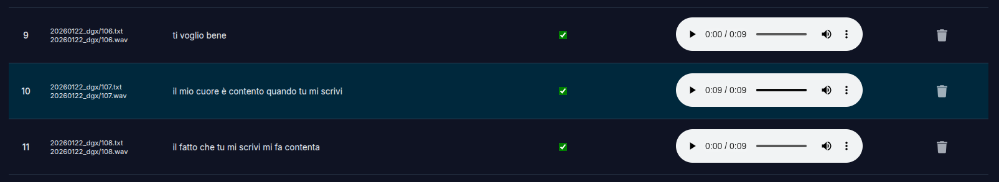
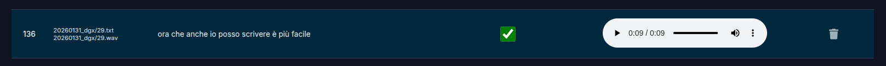
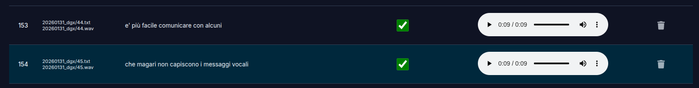
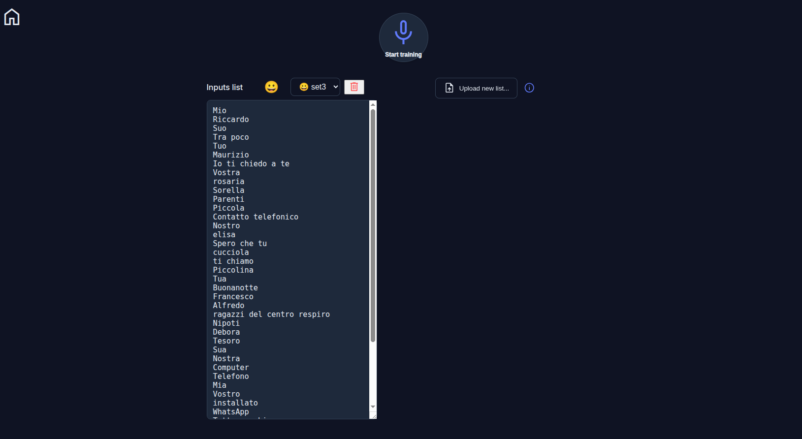
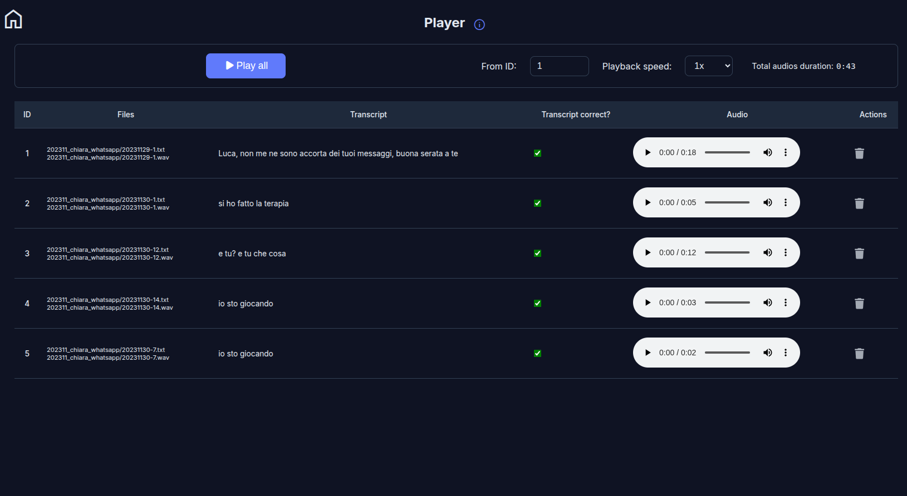
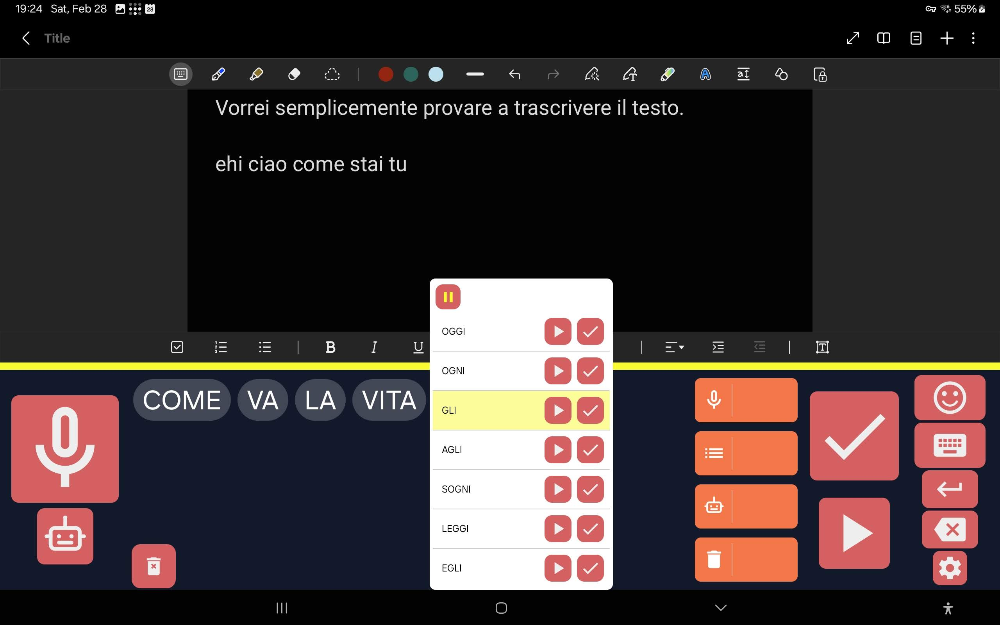
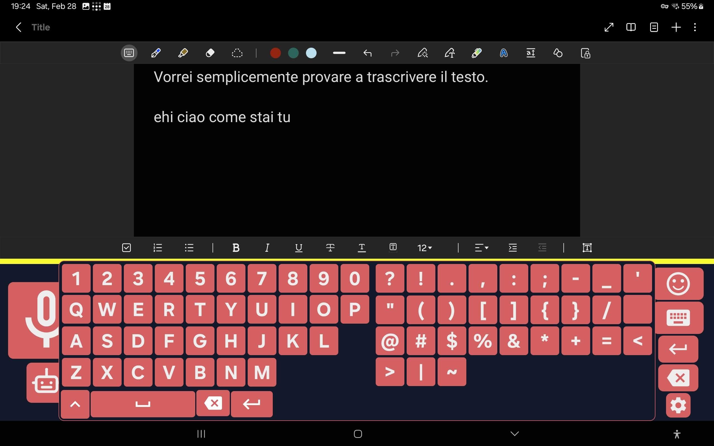
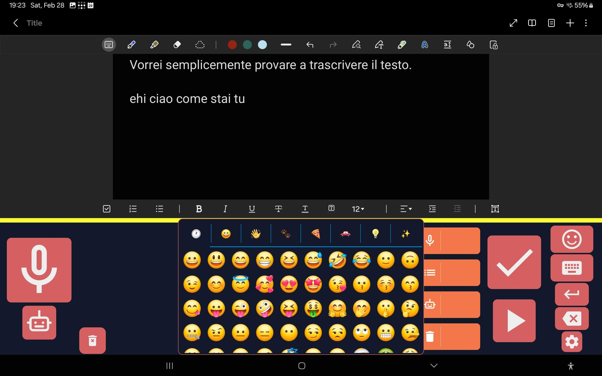
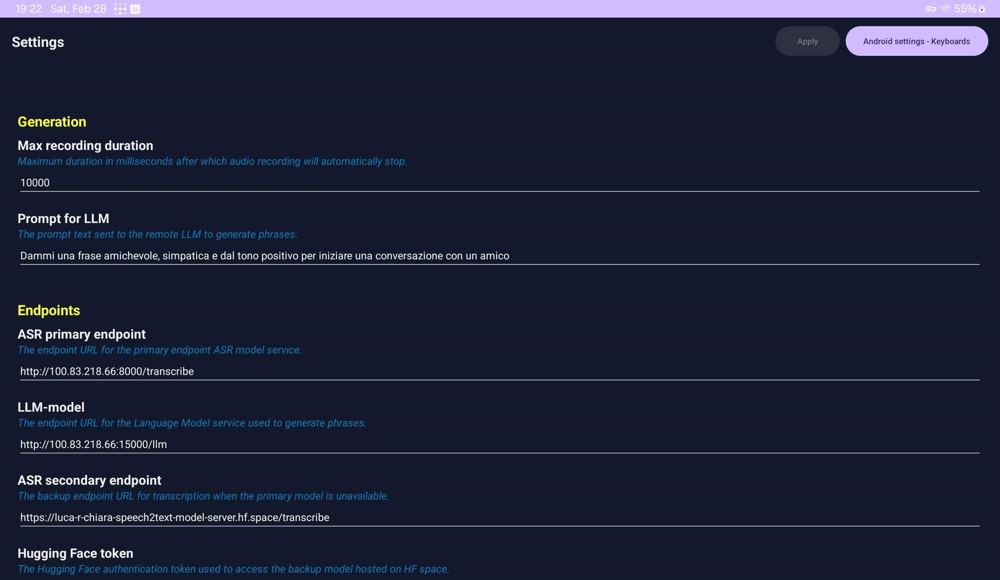
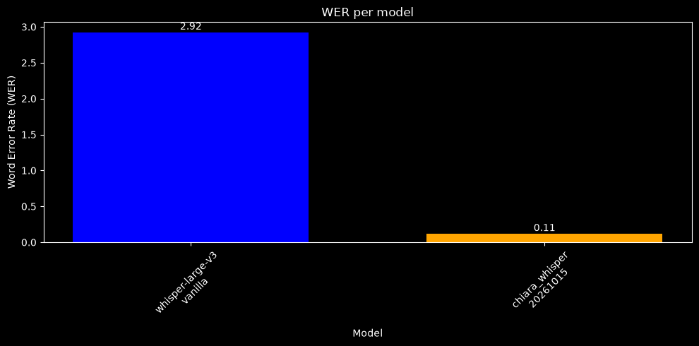

chiara-speech2text
Open-source speech2text toolkit for users with atypical speech
The open-source code and instructions can be found at the
chiara-speech2text is an open-source software toolkit to help Chiara (and
other users with atypical speech) easily communicate via automatic speech recognition (ASR).

|
In the left video, Chiara uses the system to communicate with Rosaria, a deaf friend.
Before this system, Chiara could communicate with her only in person - because Rosaria must carefully
watch Chiara’s lips speaking to understand.
Thanks to chiara-speech2text, Chiara can now communicate with people who
-otherwise- she would not be able to communicate with.
On the right, a visual summary of the system's working principle.

A message Chiara sent through chiara-speech2text's Android keyboard. The
message reads:
"il mio cuore e' contento quando tu mi scrivi" (i.e.: "my heart is happy when you write me").
chiara-speech2text enables Chiara to connect with people she loves and to
communicate in a way that was not possible before.


Some messages Chiara sent to a friend through the system, which read:
"now that I can write as well, it is easier to communicate with some who might not understand (my)
voice messages".
Background
Chiara is a very active girl with a passion for chatting and making new friends :)
Unfortunately, due to cerebral palsy, she suffers from dysarthria and atypical speech:
she has difficulties with articulation (pronunciation), fluency (speech rate and rhythm), abnormal tone,
and echolalia (repetitions).
Chiara is not able to write nor read, hence she can only communicate via speech (e.g. voice messages
through her tablet, via Whatsapp).
However -due to her dysarthria- people have quite some difficulties understanding her voice messages,
and existing speech recognition systems perform very poorly in recognizing her speech.
Due to this, her possibilities to communicate and interact are limited, which greatly limits her social
interactions.
Proposed solution
chiara-speech2text is a set of open-source software tools to help Chiara
(and other users with atypical speech) communicate digitally via ASR.
A custom Android keyboard acts as main user interface, enabling to transcribe user's speech seamlessly
within standard communication apps - such as Whatsapp.
The keyboard allows to transcribe speech without exiting the communication app - to overcome limitations
of other ASR tools (which require users to exit the app, use an external web-transcription-service, and
copy/paste the transcription back to the communication app).
Beyond the keyboard, the system has several modules to enable ASR, including functionalities to:
- record and curate data (i.e. record labeled user's speech, clean and label data) useable for models fine-tuning
- fine-tune voice-recognition models (e.g. OpenAi Whisper) to user's specific speech
- perform transcription on a remote server (for lightweight processing on users' device e.g. tablet)
- spellcheck and provide context-aware corrections of transcripts via remote LLMs
To enable back and forth written communication, Chiara sends written messages through this system, and
listens to content of her screen via chiara-select2speak
NOTE: This project uses OpenAI Whisper models for speech recognition. Given enough data from end-users,
any language supported by Whisper (e.g. German, Spanish, French, etc) could be used.
Demos
Videos
Chiara demonstrating use of the keyboardKeyboard features (recording, transcription, suggestions, etc)
The video below shows the difference in transcription performance between the fine-tuned model and vanilla (non fine-tuned) ones
Chiara recording data to train the ASR models
Screenshots, videos
Frontend
|
 The frontend allows users to upload custom words/phrases - to train models to their own chosen vocabulary |
 The frontend allows to curate audio recordings: listen, edit transcripts, delete low-quality data not suitable for training |
Keyboard
|
 The keyboard allows to substitute words with similar ones (based on Levenshtein distance), to facilitate corrections |
 The keyboard allows to write using normal keys |
|
 The keyboard supports emojis |
 The keyboard can be configured through settings |
Analysis tool
Performance of the system (e.g. WER) can be explored via a custom analysis toolResults
The plot below shows a comparison of Word error Rate (WER) for vanilla and fine-tuned models.

The snippet below shows a comparison of the transcripts between fine-tuned and vanilla models, across different recordings (entries). Fine-tuned models can transcribe Chiara's speech way more faithfully than vanilla models. Each entry:
- is enclosed with {}
- contains the following properties:
- truth: the real word / phrase pronounced by Chiara (labelled manually by Luca)
- fine-tuned: the output from the whisper-large-v3-turbo fine-tuned model
- vanilla: the output from the whisper-large-v3-turbo vanilla model
{
" truth": "zia perché",
"fine-tuned": "zia perché",
" vanilla": " perché"
},
{
" truth": "perché mi hai mandato questo video",
"fine-tuned": "perché mi hai mandato questo video",
" vanilla": " Piki mi mando un altro video"
},
{
" truth": "che cosa mi vuoi comunicare",
"fine-tuned": "che cosa che cosa mi vuoi comunicare",
" vanilla": " Che cosa mi vuoi comunicare?"
},
{
" truth": "zia mi puoi mandare solo video che si vedono con",
"fine-tuned": "zia mi puoi mi puoi mandare solo vediamo che ci vediamo con",
" vanilla": " Dìa mi puoi andare a me, mi puoi andare a te lo video che ti vedo con me."
},
{
" truth": "youtube",
"fine-tuned": "i ho giusto",
" vanilla": " Ehi ehi uai uai uai uai uai tu..."
},
{
" truth": "youtube",
"fine-tuned": "youtube",
" vanilla": " YouTube"
},
{
" truth": "il programma della musica",
"fine-tuned": "il progresso della musica",
" vanilla": " Ippocampo della moptica!"
},
{
" truth": "io questo programma non ce l'ho",
"fine-tuned": "io questo programma non ce l ho",
" vanilla": " io io questo punto non è... non... non è..."
},
{
" truth": "perché io altri programmi non ne ho",
"fine-tuned": "perché io altri programmi non ce lo",
" vanilla": " Sì, perché io ho fatto, non mi non mi non mi non mi non mi non"
},
{
" truth": "ok zia a più tardi",
"fine-tuned": "ok ok zia più tardi",
" vanilla": " ok ok ok ok ok ok ok ok ok ok ok ok ok ok ok"
},
{
" truth": "ok zia a dopo",
"fine-tuned": "ok zia dopo",
" vanilla": " che già bubbo"
},
{
" truth": "alessia studia ancora un pochino dopo te ne vai a casa",
"fine-tuned": "alessia studia ancora un pochino dopo te la veri a casa",
" vanilla": " Arretta, tu be' angon po' qui ne vanno fu, tervai a capo."
},
{
" truth": "dalla foto si vede che sei stanca",
"fine-tuned": "da una volta ti vedi che sei stancata",
" vanilla": " Non lo posso dire che ti ti ti ti ti ti ti ti ti"
},
{
" truth": "ok alessia a più tardi",
"fine-tuned": "ok alessia a più tardi",
" vanilla": " Ok, è l'epia, allora, più bella, più bella, più bella. Guarda che belli, le ho fatti farà chiare la settimana scorsa, se"
},
{
" truth": "dalla foto si vede che sei sfinita",
"fine-tuned": "della foto ti vede che sei finita",
" vanilla": " Dalla foto ti vedi che te è in verità."
},
{
" truth": "hai capito",
"fine-tuned": "hai capito",
" vanilla": " Aller copito!"
},
{
" truth": "luca ora io sono disponibile",
"fine-tuned": "luca ora io sono disponibile",
" vanilla": " Ora si"
}